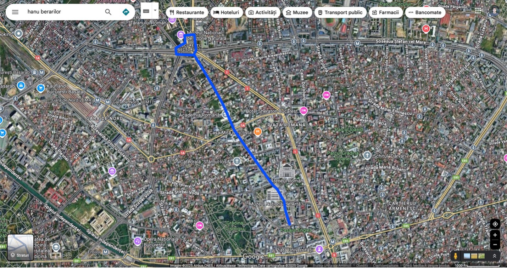
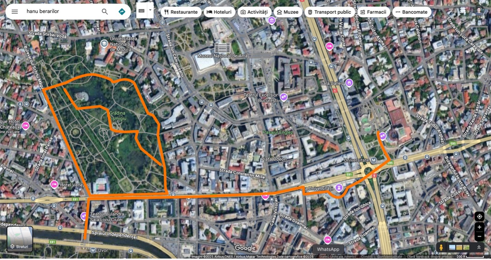
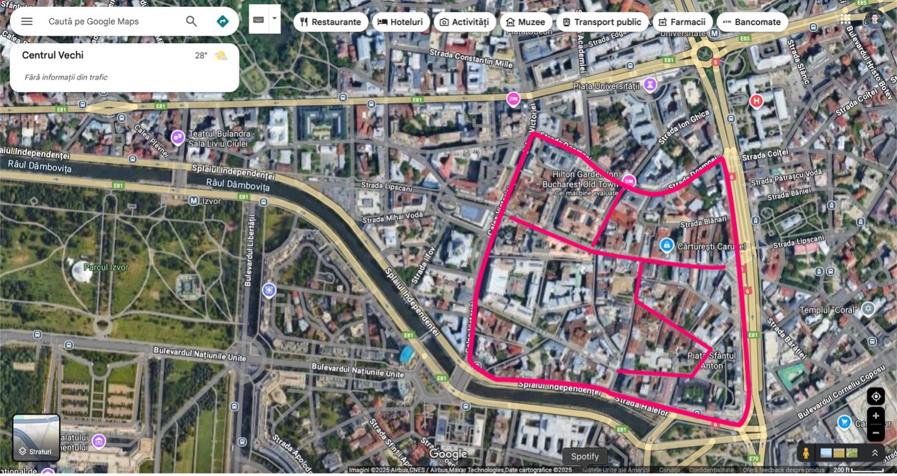
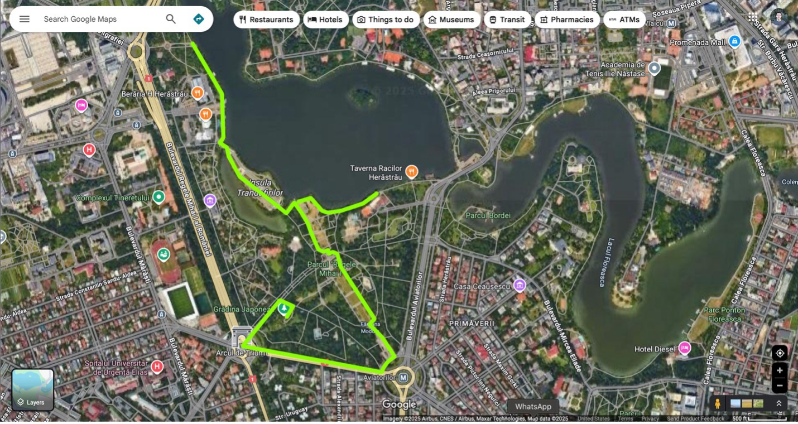
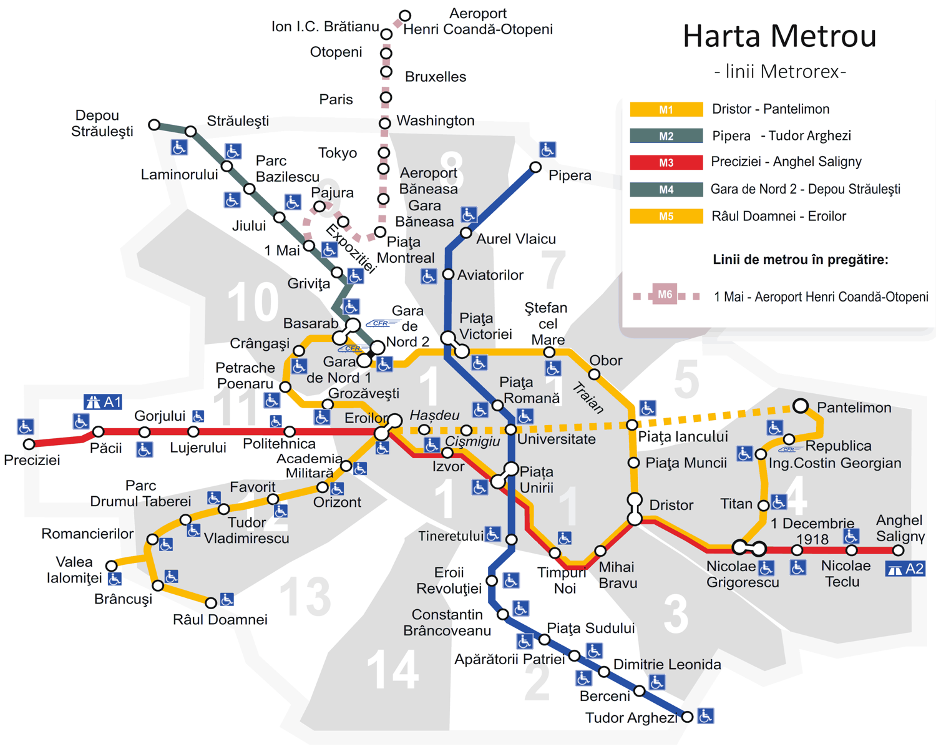

Routes, places to eat, and practical notes for getting around.
Route 1: Victory Plaza + Victory Road


Start at Victory Plaza to see the Victory Palace (Prime Minister’s office). The open area out front is often used for protests — you may see people and media there.
Walk down Victory Road. Along the way — plus ice-cream stops (Velocità, La Romana) — you’ll see the George Enescu Museum, Vernescu House, and the Romanian Academy. Continue to Revolution Plaza for the Romanian Atheneum, National Museum of Art, and the Ministry of Internal Affairs (Ceaușescu’s last speech was here —
video).
Keep going to reach University Plaza.
Route 2: University Plaza + Cișmigiu Park

University Plaza sits across from the University of Bucharest (Math, History, Literature). Historically, students gathered on the balcony to protest communism.
Across the intersection is the Bucharest National Theatre (TNB). Head west on Queen Elizabeth Blvd to Cișmigiu Park (corner: Gheorghe Lazăr High School). The park has a lake with boat rentals in summer.
Going south from the high school you’ll reach bridges with river views.
Route 3: Old Town

Very animated at night — full of bars, clubs, and restaurants. Along Victory Road’s edge you’ll see the Palace of the Deposits and Consignments (gorgeous building) and across from it the National Museum of History.
Cărturești Carusel is a striking multi-level bookstore worth popping into.
Bottom-right edge opens to Unirii Plaza. Walk the central park and head to the fountains (currently under repair). Going west on Unirii Blvd brings you to Constitution Square with views of the massive Parliament building (built under Ceaușescu; reportedly used at <50% capacity today).
Route 4: Triumph Arch + Herăstrău Park

Enter the huge Herăstrău Park from the Triumph Arch (you can go under it) and walk toward Aviatorilor Plaza, one of the main entrances. Follow the marked path to the lake.
From the lake, walk left to Rose Island (statues) and continue along the water; if you want a shorter stroll, go right. The beauty here is the lakeside walk in good weather — no formal sightseeing stops required.
Traditional restaurants (order)
Caru’ cu Bere — great food & stunning interior (book ahead). Maps
Dristor Kebap (Old Town) — sibling spot, good backup
Cartofiserie — fries on the go
Luca / Petru / Matei — bakeries; try a covrig (pretzel-like).
Luca •
Petru •
Matei
Paul (French patisserie), Casa Victoria (Romanian patisserie); lots of solid local patisseries too
Key places
Triumph Arch
National Village Museum — original rural buildings from across Romania; huge, don’t try to see it all if short on time
Parliament — pair with a walk from Gheorghe Lazăr HS to Constitution Square
Grocery stores
Mega Image — everywhere
Transportation
The subway is excellent, followed by the RATB bus network. You can tap your card at subway gates and on buses; consider a day pass if it fits your plans.
Piata Unirii (blue) — near where you’re staying
Izvor (red) — by Gheorghe Lazăr HS
Universitate (blue) — at University Plaza
Piata Victoriei (blue) — at Victory Plaza
Aviatorilor (blue) — at Herăstrău entrance mentioned above
Major transfers: Piata Unirii, Eroilor, Piata Victoriei, etc.
Other notes
Tax included in sticker prices.
Tipping usually only in restaurants (~15% common). Not typical at coffee shops.
Cards accepted almost everywhere (restaurants, groceries, transit).
City is very English friendly, especially under ~35; if asking for help, look for students.